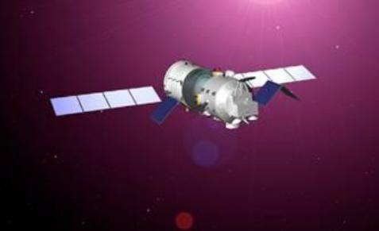

神舟四号飞船于2002年12月30日凌晨在酒泉卫星发发射中心发射升空，该飞船是在神舟一号、神舟二号、神舟三号飞行任务成功的基础上，经进一步完善研制而成，其配置、功能及技术状态与载人飞船基本相同。
神舟四号飞船是第四艘无人飞船，由推进舱、返回舱、轨道舱和附加段组成。飞船总长约7.4米，最大直径2.8米，总质量7794公斤。在推进舱和轨道舱的II、IV象限各安装一个太阳电池翼，推进舱的两个太阳电池翼总面积24.48平方米，展开后的翼展宽度约17米。轨道舱的两个太阳电池翼总面积12.24平方米，展开后的翼展宽度约10.4米。神舟四号飞船配置有13个分系统及供配电与电缆网。结构与机构分系统保证飞船的构型，并为航天员提供生活的结构空间。
神舟四号是我国载人航天工程第三艘正样无人飞船，除没有载人外，技术状态与载人飞船完全一致。在这次飞行中，载人航天应用系统、航天员系统、飞船环境控制与生命保障分系统全面参加了试验，先后在太空进行了对地观测、材料科学、生命科学试验及空间天文和空间环境探测等研究项目;预备航天员在发射前也进入飞船进行了实际体验。飞船在轨飞行期间，船上各种仪器设备性能稳定，工作正常，取得了大量宝贵的飞行试验数据和科学资料。
